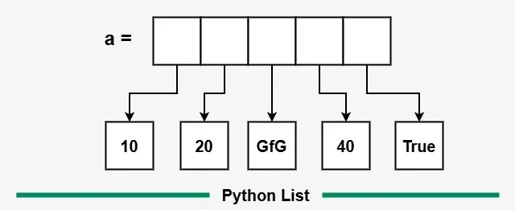

UT3: Tipos de datos complejos¶
Introducción¶
Bienvenid@s a la Unidad de Trabajo 3 (UT3) del módulo profesional optativo (MPO) de Python. En esta unidad, nos centraremos en los tipos de datos complejos, que son fundamentales para el desarrollo de programas en Python. Aprenderás a utilizar listas, diccionarios y tuplas para almacenar y manipular datos de manera eficiente.
Tipos de datos complejos¶
Los tipos de datos complejos son estructuras que permiten almacenar múltiples valores en una sola variable. En Python, los tipos de datos complejos más comunes son las listas, los diccionarios y las tuplas. Cada uno de estos tipos tiene sus propias características y usos.
Listas¶
Las listas son colecciones ordenadas y mutables de elementos. Puedes almacenar diferentes tipos de datos en una lista, incluyendo números, cadenas y otros objetos. Las listas se definen utilizando corchetes [] y los elementos se separan por comas.
mi_lista = [1, 2, 3, "Hola", True]
Si te fijas en el ejemplo anterior, mi_lista contiene cinco elementos: tres números enteros (1, 2, 3), una cadena de texto ("Hola") y un valor booleano (True). Las listas pueden contener elementos de diferentes tipos, lo que las hace muy versátiles.
Antes de entrar en las operaciones que se pueden realizar con listas, es importante entender cómo se almacenan los elementos en ellas. Cada elemento de una lista tiene un índice asociado, que comienza en 0. Por ejemplo, en la lista mi_lista anterior, el primer elemento (1) tiene un índice de 0, el segundo elemento (2) tiene un índice de 1, y así sucesivamente.

Internamente, Python almacena las listas como una secuencia de referencias a los objetos que contienen. Esto significa que cuando creas una lista, Python no copia los objetos en la lista, sino que almacena referencias a ellos. Esto es importante tenerlo en cuenta, ya que puede afectar el rendimiento y el comportamiento de tu programa.
Puedes acceder a los elementos de una lista utilizando su índice. Por ejemplo, para acceder al primer elemento de mi_lista, puedes usar:
print(mi_lista[0]) # Imprime: 1
También puedes acceder a los elementos desde el final de la lista utilizando índices negativos. Por ejemplo, mi_lista[-1] te dará el último elemento de la lista.
print(mi_lista[-1]) # Imprime: True
Para declarar una lista vacía, puedes usar:
mi_lista_vacia = []
O también puedes usar la función list():
mi_lista_vacia = list()
Operaciones con listas¶
Las listas permiten realizar operaciones como agregar, eliminar y modificar elementos. Algunas de las operaciones más comunes son:
append(): Agrega un elemento al final de la lista.insert(): Inserta un elemento en una posición específica de la lista.remove(): Elimina el primer elemento con el valor especificado.pop(): Elimina y devuelve el último elemento de la lista (o el elemento en la posición especificada).sort(): Ordena los elementos de la lista en orden ascendente.reverse(): Invierte el orden de los elementos en la lista.len(): Devuelve la longitud de la lista (número de elementos).
Otras características de las listas¶
Las listas también tienen otras características interesantes, como la posibilidad de anidar listas dentro de otras listas (listas multidimensionales) y la capacidad de utilizar comprensiones de listas para crear nuevas listas de manera concisa.
Este tipo de estructuras las denominamos listas anidadas. Por ejemplo:
mi_lista_anidada = [[1, 2, 3], ["Hola", "Mundo"], [True, False]]
En este caso, mi_lista_anidada contiene tres listas, cada una con diferentes tipos de datos. Puedes acceder a los elementos de las listas anidadas utilizando múltiples índices:
print(mi_lista_anidada[0][1]) # Imprime: 2
print(mi_lista_anidada[1][0]) # Imprime: Hola
Ejercicios de clase: listas¶
Para practicar lo aprendido en esta unidad, hemos preparado una serie de ejercicios que te ayudarán a consolidar tus conocimientos. Puedes encontrar los ejercicios en el siguiente enlace